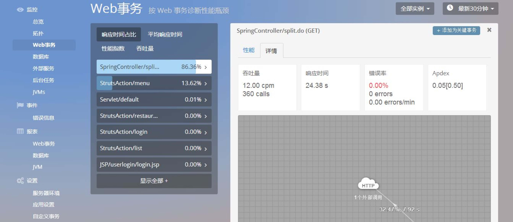

监控-web事务
该页面为 Web 事务页面，共由事务栏、Top5 Web 事务响应时间图、吞吐 量图、慢事务追踪列表这 4 个部分组成。如下图：
事务栏：
- 事务栏展示当前应用下的所有事务。
- 事务栏可以按照“响应时间占比大到小”、“平均响应时间从长到短”、“性能指数从低到高”、“吞吐量从高到低”来进行排序。点击单条事务，可以打开单个事务页面。单个事务页面， 展示了当前事务的详细信息，包括“性能”和“详情”部分。
- 单个事务页面，将在后面单独作为一部分进行介绍。
Top5 Web 事务响应时间图：
- 以面积图的方式，展示了平均响应时间最长 的 5 个 Web 事务， 其响应时间随时间的变化情况。


吞吐量图：
- 以折线图的方式，展示 Web 事务的吞吐量随时 间的变化情况。
慢事务追踪列表：
- 该列表展示了当前应用发生响应时间超出阈值的 事务时，相应事务的追踪记录。
- 点击单条追踪记录，查看该条记录的详细信息。
- 单条追踪记录页面，将在下面单独进行介绍。
单条事务
- 点击单条事务时，会展示当前事务的详细信息，包括性能、详情这 2 个部 分。而每个部分都有相应的图表，用于从各个指标维度展示出单个事务的数据。
第 1 部分——性能
- 在性能部分，共有 4 个图表，分别为执行时间图、吞吐量图、崩溃列表、慢事务追踪列表。这 4 个图表分别从不同的指标维度，对事务的性能数据进行了解读。
然而，什么是执行时间?它和响应时间有什么区别?
- 执行时间和响应时间是两个不同的概念，具体区别详见“附录II——术语解释”。
执行时间图：
- 在执行时间图中，展示了该事务各个组件的执行时间随 时间的变化情况。
查看具体节点的指标数据：
将鼠标悬停在图上某个节点，将显示节点对应时间段 内的指标数据（节点对应的时间段，随时间选择器选择的时间跨度而变化），包括总响应时间、平均响应 时间、总执行时间、吞吐量、执行次数。
 吞吐量图：
吞吐量图：吞吐量图展示了该事务的吞吐量随时间的变化情况。
添加为关键事务：
- 点击按钮，可以将当前的 Web 事务添加为关键事务。
- 关键事务，将在“关键事务”功能模块进行介绍。
介绍了执行时间图和吞吐量图这 2 个图表，下面将介绍崩溃列表、 慢事务追踪列表这 2 个部分。
崩溃列表：
- 在执行时间图中，展示了该事务各个组件的执行时间随时间的变化情况。

慢事务追踪列表：
- 展示该事务的所有慢事务追踪记录。
第 2 部分——详情
在详情部分，共有 5 个图表，分别为基本指标和事务拓扑图、响应时间图、 错误率图、Apdex 图、慢事务追踪列表。这 5 个图表分别从不同的维度，对事 务的性能数据进行了解读和展示。
基本指标和事务拓扑图：
- 基本指标：展示该事务的吞吐量、响应时间、错误率和 Apdex 值。
- 事务拓扑图：展示该事务调用其他事务、数据库、外部服务的拓扑关系。
- 事务拓扑图的功能，与应用拓扑图相同，点击不同图标可以弹出展示 窗口，展示相应模块的详细信息。
添加为关键事务：
点击此处，会弹出填写框，将该事务添加 为关键事务，并为该其设置名称和阈值。  吞吐量图：
吞吐量图展示了该事务的吞吐量随时间的变化情况。
介绍了执行基本指标和事务拓扑图、响应时间图这 2 个图表，下面 将介绍错误率图、Apdex 图这 2 个部分。（此处的慢事务追踪列表，与性能部 分相同。在此处重复，只是为了避免用户需要在页面间切换，方便用户查看数 据。故不再赘述。）
错误率图：
- 错误率是指“该事务的错误次数与事务总次数的比率”，错 误率图展示了该比率随时间的变化情况。
Apdex 图：
- Apdex 值用于量化应用的性能，而在此处，则用于 衡量单条事务的性能。该图展示了该事务的 Apdex 值随时间的变化情况。

慢事务追踪列表：
- 此处的慢事务追踪列表，与性能部分相同。在此处重复， 只是为了避免用户需要在页面间切换，方便用户查看数 据。故不再赘述。
单条慢事务追踪
- 点击单条慢事务追踪时，会展示当前慢事务追踪的详细信息，包括概要、 详情、参数、SQL 这 4 个部分。
第 1 部分——概要
基本信息：
- 展示该条慢事务追踪记录的基本信 息，包括开始时间、总耗时、对应的 实例（agent）。
组件执行时间面积图：
- 以横置的柱状面积图方式，展示了在本次慢事务追踪记 录中，相应事务的各个组件，其执行时间在事务总耗时中所占的百分比。
- 横置的柱状面积图，能够更直观的展示百分比数据。

最慢组件列表：
- 展示在该 trace 记录中，执行慢的组件的调用 次数、执行时间、组件的执行时间在事务响应时间中所占的时间百分比。
第 2 部分——详情
方法列表：
- 展示该事务的各个方法的时间戳、耗时、耗时百分比和 调用详情。
方法追踪功能：
- 点击此处，查看该方法的详细日志信 息，从而定位问题。

颜色标识：
- 耗时百分比为红色和黄色的方法是耗时较长的地方，需要重点关注。
HTTP 请求：
- 点击此处，查看调用该方法的 HTTP 请求。
第 3 部分——参数
- 在单条慢事务追踪记录的参数部分，展示了该事务的 HTTP 响应状态码、
JVM 线程池名称，以及该事务中的自定义参数。如下图所示。

那么，什么是 HTTP 状态码?
- HTTP 状态码（HTTP Status Code）是用以表示网页服务器 HTTP 响应状态的 3 位数字代码。（可参照 HTTP 状态码详解）
| 常见状态码 | 含义 |
|---|---|
| 200 OK | 请求已成功 |
| 301/302 Moved Permanently（重定向） | 请求的 URL 已移走。Response 包含一个 Location URL， 说明资源现在所处的位置。 |
| 304 Not Modified（未修改） | 客户的缓存资源是最新的， 要客户端使用缓存。 |
| 404 Not Found | 未找到资源。 |
| 501 Internal Server Error | 服务器遇到一个错误，使其无法对请求提供服务。 |
第 4 部分——SQL
- 在单条慢事务追踪记录的 SQL 部分，展示该事务进行的数据库查询的详细信息，包括调用总时间、调用次数和 SQL 语句的类型。如下图所示。